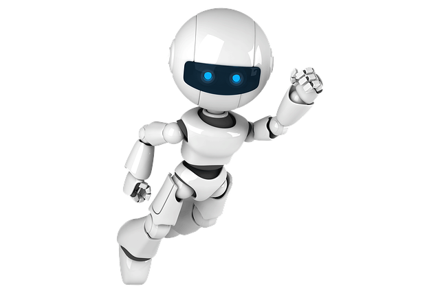
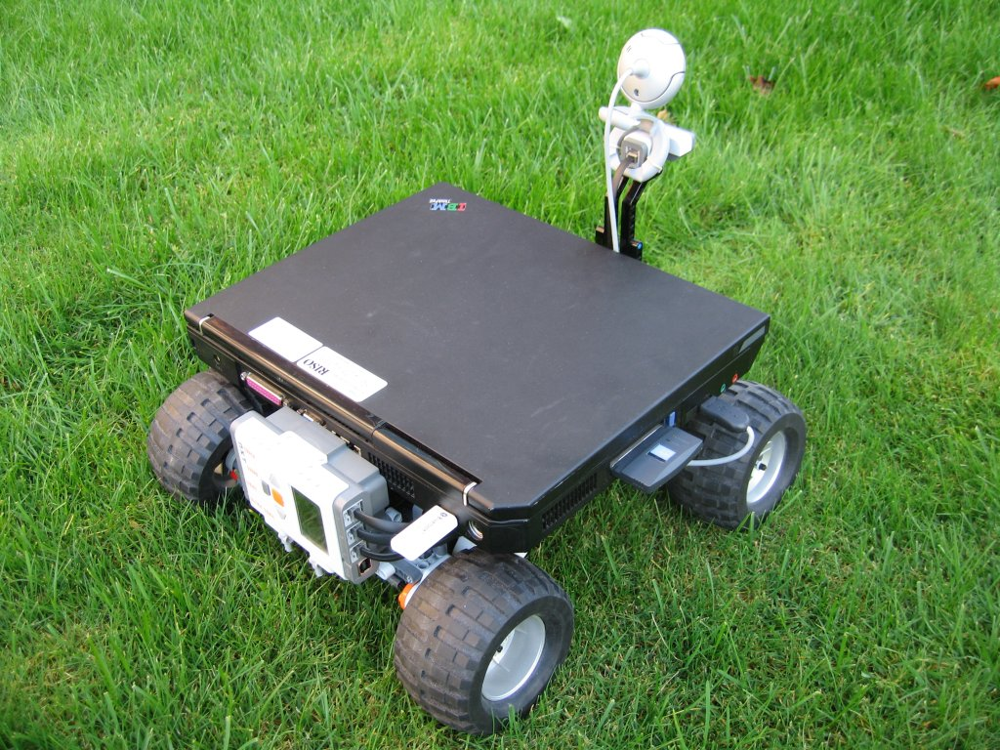

01
Robotique à Distance
Systèmes Embarqués • ROS 2

Problème
Comment contrôler un robot mobile à distance avec une latence minimale tout en maintenant une conscience situationnelle complète de l'environnement ?
Solution Mathématique
Implémentation d'un modèle cinématique différentiel couplé à un filtre de Kalman étendu (EKF) pour la fusion des données capteurs (IMU, encodeurs, LiDAR) et l'estimation d'état robuste.
Implémentation
Architecture ROS 2 modulaire avec nodes dédiés : perception (LiDAR), localisation (SLAM), planification de trajectoire et contrôle bas niveau. Communication temps réel via DDS.
Résultat
Robot fonctionnel contrôlable via interface web avec flux vidéo temps réel, cartographie 2D dynamique et latence de commande < 50ms sur réseau local.
Architecture ROS 2
Sensors
LiDAR • IMU • Camera
→
Processing
SLAM • EKF • Nav2
→
Control
Motion • PID
→
Actuators
Motors • Servos